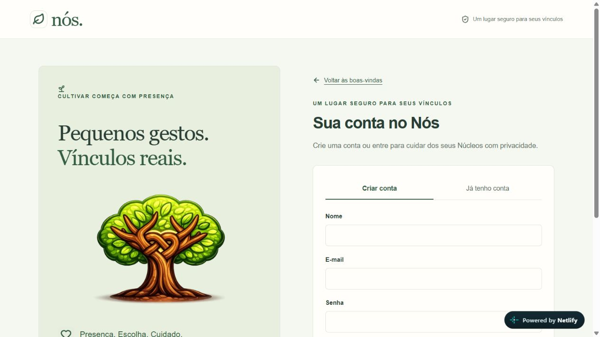
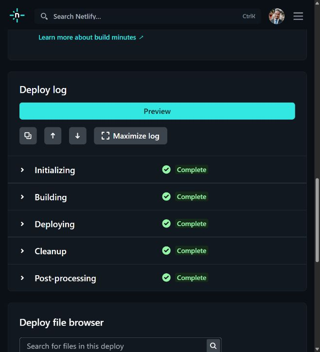

Capturas reais de20/10/2026. Fonte 8b529e8, deploy 6ad7eeb747e9c9a82835d3b5. Abrir aplicativo · Registro · Atlas.
Build real aprovado;27 rotas autenticadas e nove grupos online verificados com duas contas temporárias removidas. Resultado sem credenciais. Esboços continuam sinalizados; esta galeria não representa todos os modais. O inventário de modais e a galeria integral mantêm origem/gatilho/estado.


SMTP/recebimento externo, backup/restauração e piloto completo não certificados.